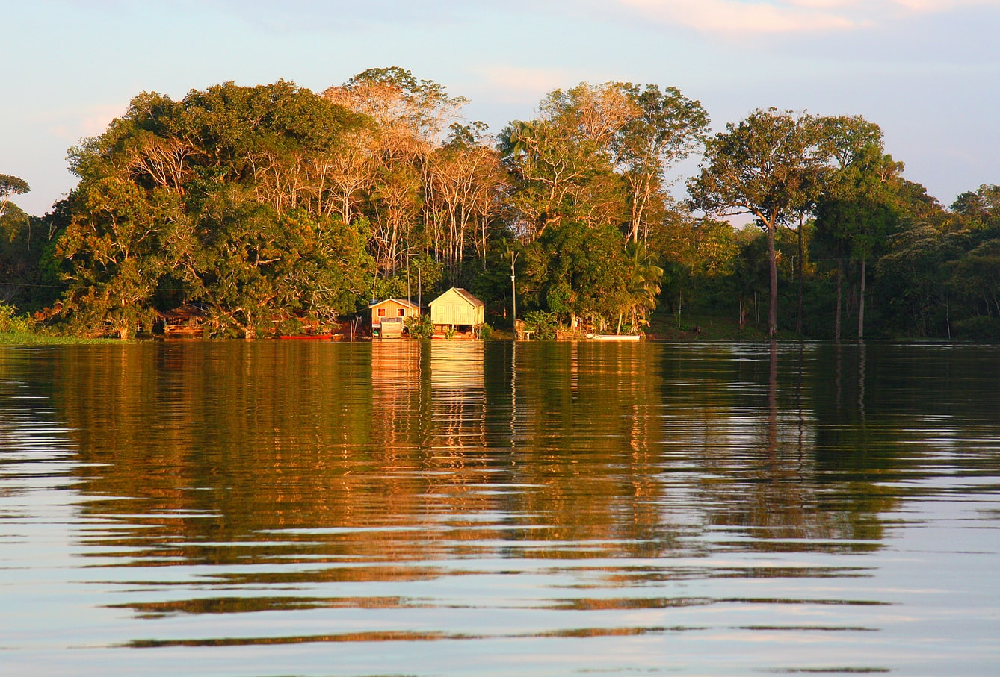
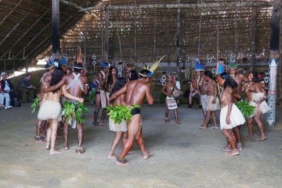
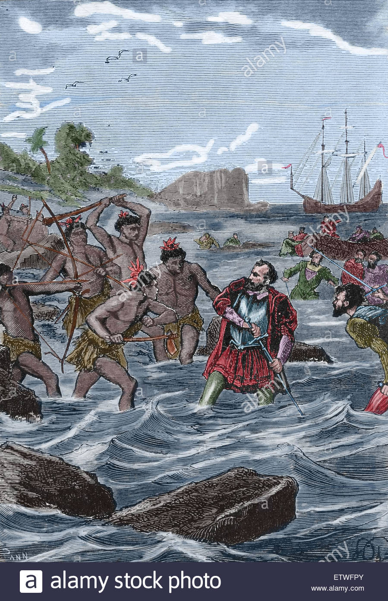

History - História
Pre-Cabraline era
Some of the earliest human remains found in the Americas, Luzia Woman, were found in the area of Pedro Leopoldo, Minas Gerais and provide evidence of human habitation going back at least 11,000 years.
The earliest pottery ever found in the Western Hemisphere was excavated in the Amazon basin of Brazil and radiocarbon dated to 8,000 years ago (6000 BC). The pottery was found near Santarém and provides evidence that the tropical forest region supported a complex prehistoric culture. The Marajoara culture flourished on Marajó in the Amazon delta from 400 CE to 1400 CE, developing sophisticated pottery, social stratification, large populations, mound building, and complex social formations such as chiefdoms.
Around the time of the Portuguese arrival, the territory of current day Brazil had an estimated indigenous population of 7 million people, mostly semi-nomadic, who subsisted on hunting, fishing, gathering, and migrant agriculture. The indigenous population of Brazil comprised several large indigenous ethnic groups (e.g. the Tupis, Guaranis, Gês and Arawaks). The Tupí people were subdivided into the Tupiniquins and Tupinambás, and there were also many subdivisions of the other groups. Click here for more information on Brazilian's history


Portuguese colonization

The land now called Brazil was claimed for the Portuguese Empire on 22 April 1500, with the arrival of the Portuguese fleet commanded by Pedro Álvares Cabral.
The Portuguese encountered indigenous peoples divided into several tribes, most of whom spoke languages of the Tupi–Guarani family, and fought among themselves.
Though the first settlement was founded in 1532, colonization effectively began in 1534, when King John III of Portugal divided the territory into the fifteen private and autonomous Captaincy Colonies of Brazil.
However, the decentralized and unorganized tendencies of the captaincy colonies proved problematic, and in 1549 the Portuguese king restructured them into the Governorate General of Brazil in the city of Salvador, which became the capital of a single and centralized Portuguese colony in South America.
In the first two centuries of colonization, Indigenous and European groups lived in constant war, establishing opportunistic alliances in order to gain advantages against each other.
By the mid-16th century, cane sugar had become Brazil's most important export, and slaves purchased in Sub-Saharan Africa, in the slave market of Western Africa(not only those from Portuguese allies of their colonies in Angola and Mozambique), had become its largest import, to cope with plantations of sugarcane, due to increasing international demand for Brazilian sugar.
Portuguese Brazil received more than 2.8 million slaves from Africa between the years of 1500 to 1800.Click here for more information on Brazilian's history